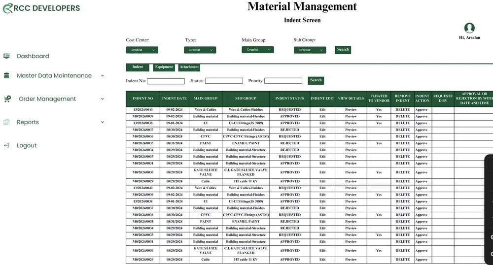

RCC Developers · ERP system
Custom ERP for RCC Developers
A custom ERP system built from scratch for RCC Developers, bringing offline business operations and manual workflows into one integrated digital platform.
Java · MySQL · HTML · CSS · Adobe Illustrator · UI/UX Design